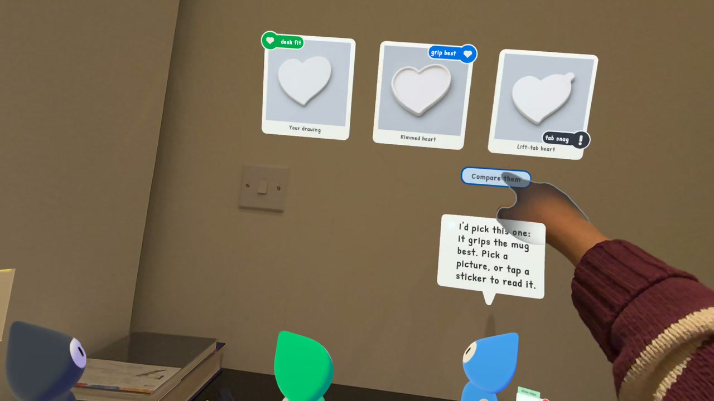

Spark: exploring possibilities
I find inspiration in the things around you. Show me an object, a drawing, or an image on a screen, and let's see where it takes us.
Magnifier, capture frame, colour paletteCreate what your space needs.
Roomsmiths VR is a controller-free mixed reality workshop for Meta Quest 3 and 3S. Three AI companions help you brainstorm, develop a design, and create personalised 3D objects inspired by your surroundings.
Talk, sketch with your fingertip, share visual references, and measure with your hands. Preview and paint a creation in your own space, then download it for further editing or 3D printing.
Project ContextCreated over one month for the Meta VR Start Developer Competition 2026. I co-developed the concept and designed the interactions, and was responsible for all development, including the XR experience, AI agent system, and companion website.
I often work on projects that begin with developing a new idea. Some of my best ideas come from brainstorming with other people, when a different perspective challenges an assumption or helps me see a connection I had missed. Working alone, I can get stuck in my own thoughts, overthink the possibilities, or lose momentum before making anything.
I wanted to recreate the feeling of having a creative team beside me. I imagined virtual agents sharing my desk, noticing what was around me, asking questions, and helping me work through an idea. That wish to work alongside spatial agents became the starting point for Roomsmiths VR.
What if I had a little creative team right at my desk?
Making physical objects gave that wish a practical direction. I am not particularly skilled at 3D modelling, and creating something for my room can involve gathering references, taking measurements, and moving between unfamiliar tools. I wanted the team to help me carry an idea through those steps and into something I could actually use.
Roomsmiths VR is a shared creative workshop in your own room. The companions can work beside the objects that inspire an idea, and their tools let you act on the conversation as it unfolds. You can show them a reference, sketch a shape, or measure a space with your hands.
Each companion brings a different personality, perspective, and set of tools. Together, they help explore possibilities, develop a design, and question whether it will work in everyday life.
I find inspiration in the things around you. Show me an object, a drawing, or an image on a screen, and let's see where it takes us.
Magnifier, capture frame, colour paletteLet's give your idea a shape. We can sketch together, compare designs, carve a model, and try different finishes. I'll keep our creations in my notebook.
Sketchbook, carving tools, brush, notebookWill it fit? Let's measure it in your space and work through the practical details before we prepare your creation for printing.
Tape measure, size box, print checkFrom a first idea at your desk to a physical object for your room.
Share an idea through the microphone and see it become a spatial sticky note. Or ask Spark to explore your room, inspect nearby objects with a magnifier, and mark possible sources of inspiration.
Describe what you imagine or draw with your fingertip in Maker's sketchbook. The companions turn those inputs into visual concepts. Compare the options together and choose a direction before making the model.

Stretch Fixer's tape measure between your hands. Your measurements become an adjustable box on the desk, so you can see how the design will fit beside your belongings before generating it.
Maker carves a wooden block while the 3D model is generated. Inspect the result at real-world scale, refine its shape through conversation, and switch between versions on its stand.
Borrow colours from your surroundings or choose from the colour wheel, then paint directly with your fingertip. Show a reference or describe a style to explore new finishes. Part recognition supports edits to individual features.
Open Maker's notebook to revisit and export a creation. Its collection code opens the files on the companion website. Continue in a 3D application, prepare a print, and bring the finished object back into your room.
Download STL, 3MF, and GLB files from the companion website. Try the sample collection with the code WAVE 2026.
Ideas stay on the spatial sticky-note wall, and Maker's notebook keeps your design history. Offline collection mode also lets you gather notes, photos, and sketches without internet or a room scan, ready to develop later.
I was responsible for all development, alongside interaction design and shared concept development. My work connected the companions' conversations to spatial tools, model generation, and a web export workflow.
The Quest app runs the workshop, AI services help develop the design, and the companion website delivers the finished files.
Conversations, visual concepts, 3D models, and part recognition
Store exported creations and make them available through a collection code
Preview the creation and download STL, 3MF, or GLB files
The app checks AI suggestions against the current step before acting, and presents one question at a time.
Camera images identify objects; depth and the room scan help place notes and companions beside them.
Part recognition supports focused edits. Mesh repair closes gaps before the model is exported for editing or printing.
Heavy image and mesh work runs in the background to target 60 fps. Ideas and creations save locally between sessions.
The early prototypes focused on open-ended brainstorming, but conversations quickly became cluttered. Long responses were tiring to read in a headset, and additional suggestions could make a decision harder. Through repeated iterations, I gave each companion a distinct role, personality, and set of tools so their contributions were easier to follow and act on.
Suggestions become sticky notes and design cards. Questions about size become a tape measure and a box that can be adjusted on the desk. These interactions keep the user involved in making decisions through visible, tangible actions.
Maker's carving animation connects the wait for a generated model to the act of making. The companion remains part of the experience while the model is being prepared.
The idea wall and notebook preserve references and design history. Offline collection supports gathering ideas before AI is available, while the website carries finished work into desktop editing and printing.
Building Roomsmiths VR changed how I thought about AI collaboration. In the early prototypes, more ideas and longer conversations could leave me with more to process. The interactions became more useful when a question led directly to something I could do. “How wide should it be?” became easier to answer when Fixer handed me a tape measure and I could see the dimensions take shape on my desk.
Seeing Spark, Maker, and Fixer develop their own personalities and ways of helping was especially rewarding. They grew out of a wish I had felt while working alone. Being able to think with them, find inspiration in my room, and create an object for that space made the original idea feel tangible.
I want to keep exploring how spatial agents can be thoughtful collaborators, recognising when to offer a possibility, when to challenge a decision, and when to give the user room to lead.